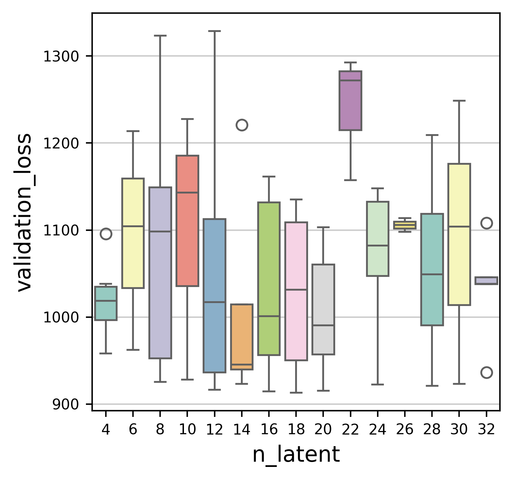
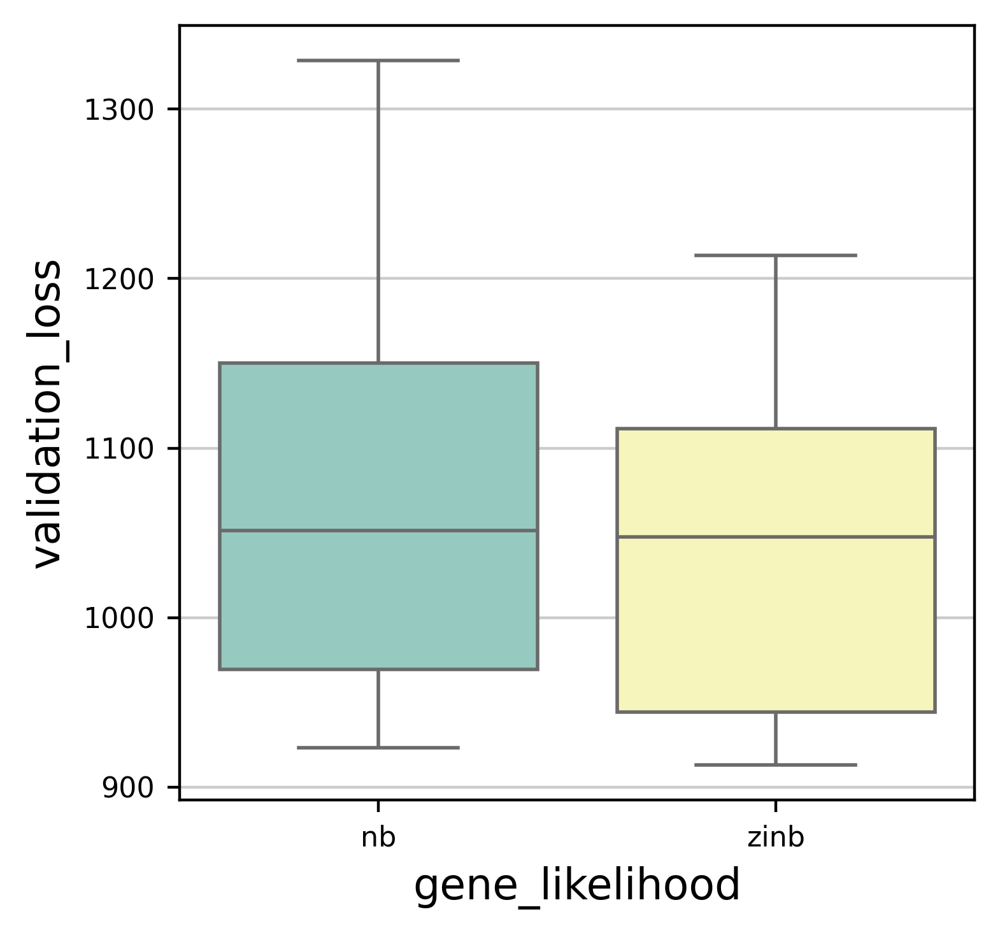
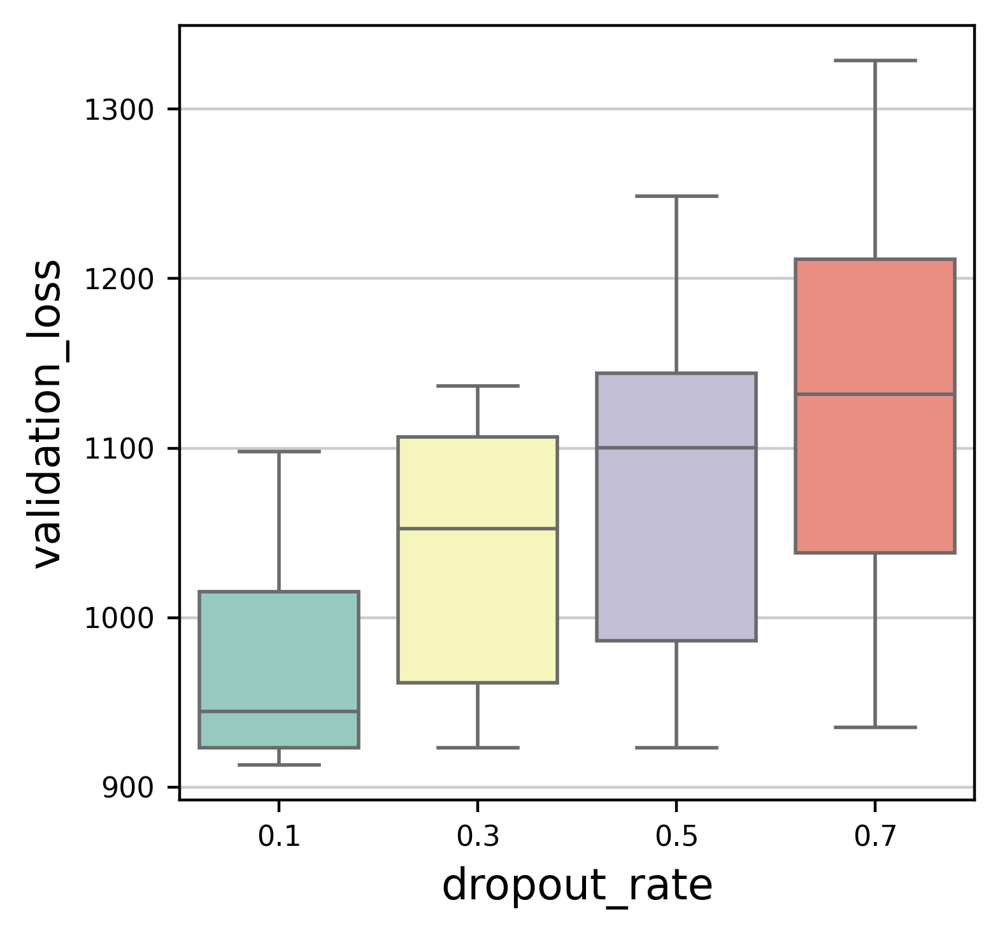
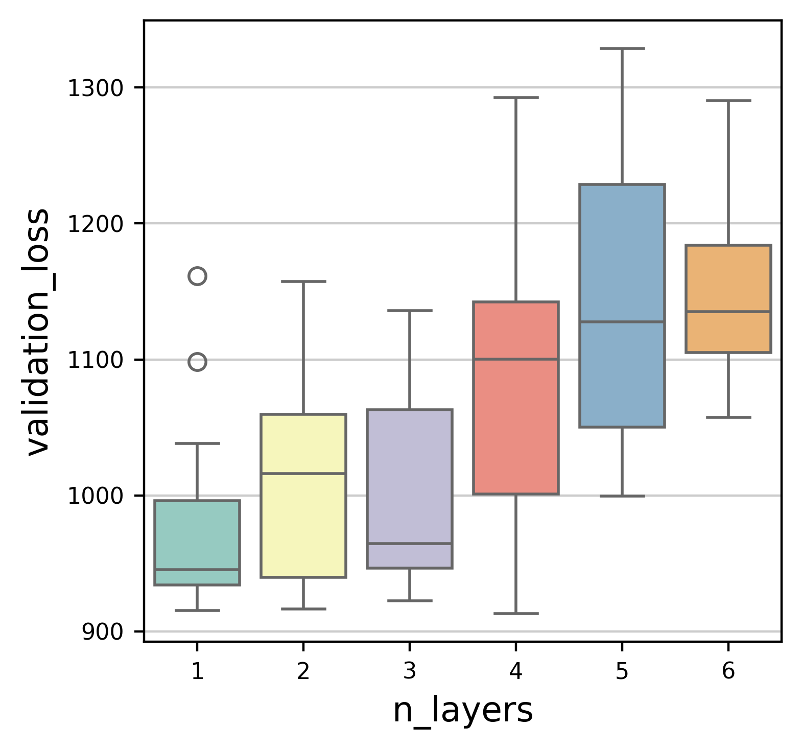
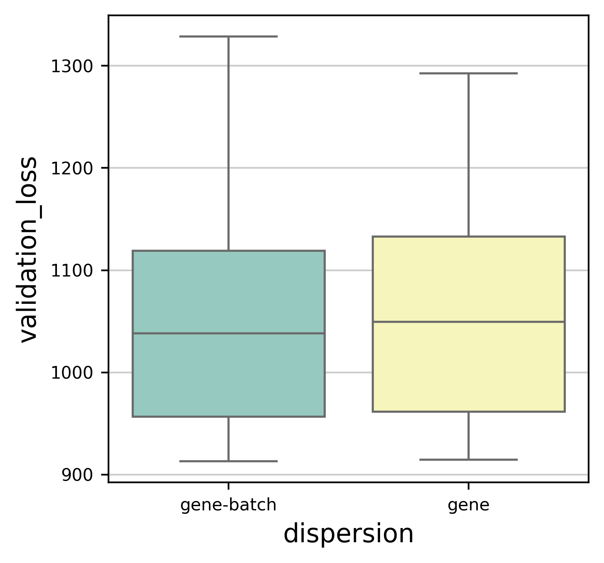
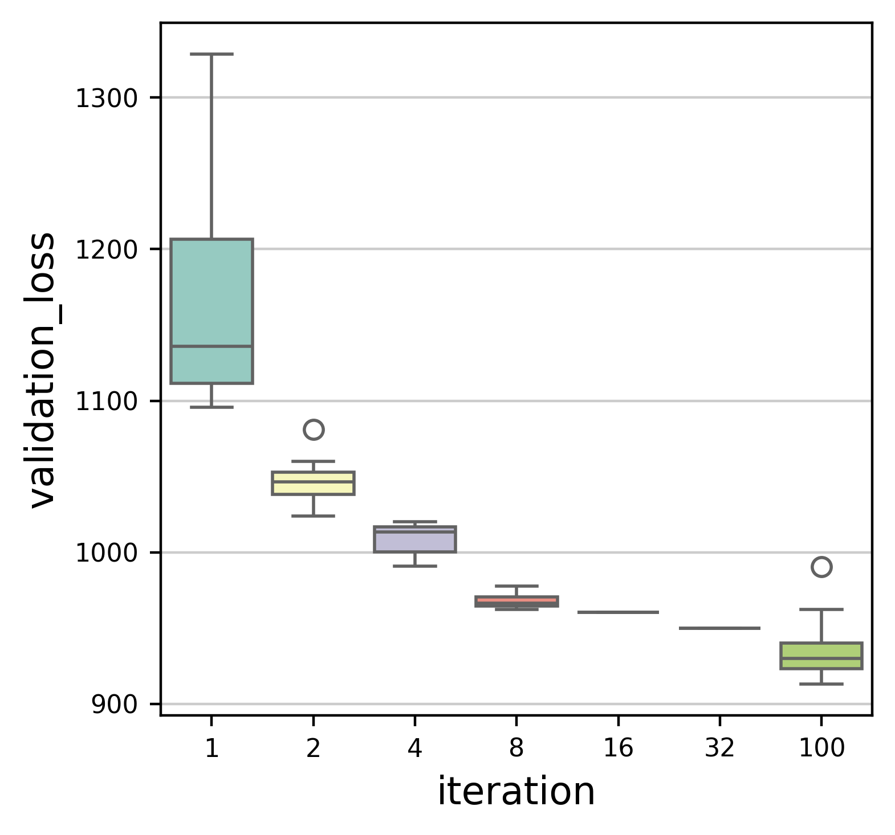

Hypertune 2 : with scvi-tools#
In this script, we used scvi-tools to tune the parameters like n_hidden, n_layers, dropout_rate, gene_likelihood and dispersion. Training loss the the metrics that to evaluate the training performance.
[18]:
import time
t1=time.time()
import logging
import os
import scanpy as sc
import scvi
from scvi import autotune
from hyperopt import hp
import datetime
import sys
import argparse
import anndata
import numpy as np
import ray
from ray import tune
import scarches as sca
import seaborn as sb
import matplotlib.pyplot as plt
[28]:
plt.rcParams.update({'font.size': 12, 'axes.titlesize': 12, 'axes.labelsize': 12, 'xtick.labelsize': 8, 'ytick.labelsize': 8})
[2]:
adata=sc.read("../../process/pre-intergration/big_data/20241008_core_pp_log1p_half_gene_small_HVG.h5ad")
[3]:
condition_key = "Sample"
labels_key = "coarse_anno_1"
[4]:
model_cls = sca.models.SCVI
tuner = scvi.autotune.ModelTuner(model_cls)
tuner.info()
model_cls.setup_anndata(adata)
dispersions=["gene", "gene-batch"]
space = {
"n_latent": tune.qrandint(4,32,2), # [5, 20]
"n_hidden": tune.choice([64, 128, 256]),
"n_layers":tune.qrandint(1,7,1),
"dropout_rate":tune.choice([0.1, 0.3, 0.5, 0.7]),
"gene_likelihood": tune.choice(["zinb", "nb"]),
"dispersion": tune.choice(dispersions)
}
adata.X = adata.layers['counts']
adata.raw = adata
raw = adata.raw.to_adata()
raw.X = adata.layers['counts']
adata.raw = raw
sca.models.SCVI.setup_anndata(adata, batch_key=condition_key, labels_key=labels_key)
nlatent=10
ModelTuner registry for SCVI
Tunable hyperparameters ┏━━━━━━━━━━━━━━━━━━━━━━━━━━┳━━━━━━━━━━━━━━━┳━━━━━━━━━━━━━━┓ ┃ Hyperparameter ┃ Default value ┃ Source ┃ ┡━━━━━━━━━━━━━━━━━━━━━━━━━━╇━━━━━━━━━━━━━━━╇━━━━━━━━━━━━━━┩ │ n_hidden │ 128 │ VAE │ │ n_latent │ 10 │ VAE │ │ n_layers │ 1 │ VAE │ │ dropout_rate │ 0.1 │ VAE │ │ dispersion │ gene │ VAE │ │ gene_likelihood │ zinb │ VAE │ │ latent_distribution │ normal │ VAE │ │ encode_covariates │ False │ VAE │ │ deeply_inject_covariates │ True │ VAE │ │ use_batch_norm │ both │ VAE │ │ use_layer_norm │ none │ VAE │ │ optimizer │ Adam │ TrainingPlan │ │ lr │ 0.001 │ TrainingPlan │ │ weight_decay │ 1e-06 │ TrainingPlan │ │ eps │ 0.01 │ TrainingPlan │ │ n_steps_kl_warmup │ None │ TrainingPlan │ │ n_epochs_kl_warmup │ 400 │ TrainingPlan │ │ reduce_lr_on_plateau │ False │ TrainingPlan │ │ lr_factor │ 0.6 │ TrainingPlan │ │ lr_patience │ 30 │ TrainingPlan │ │ lr_threshold │ 0.0 │ TrainingPlan │ │ lr_min │ 0 │ TrainingPlan │ │ max_kl_weight │ 1.0 │ TrainingPlan │ │ min_kl_weight │ 0.0 │ TrainingPlan │ └──────────────────────────┴───────────────┴──────────────┘
Available metrics ┏━━━━━━━━━━━━━━━━━┳━━━━━━━━━━━━┓ ┃ Metric ┃ Mode ┃ ┡━━━━━━━━━━━━━━━━━╇━━━━━━━━━━━━┩ │ validation_loss │ min │ └─────────────────┴────────────┘
Default search space ┏━━━━━━━━━━━━━━━━┳━━━━━━━━━━━━━━━━━┳━━━━━━━━━━━━━┳━━━━━━━━━━━━━━━━━━━┓ ┃ Hyperparameter ┃ Sample function ┃ Arguments ┃ Keyword arguments ┃ ┡━━━━━━━━━━━━━━━━╇━━━━━━━━━━━━━━━━━╇━━━━━━━━━━━━━╇━━━━━━━━━━━━━━━━━━━┩ │ n_hidden │ choice │ [[64, 128]] │ {} │ └────────────────┴─────────────────┴─────────────┴───────────────────┘
/home/gilberthan/anaconda3/envs/py311/lib/python3.11/abc.py:119: FutureWarning: SparseDataset is deprecated and will be removed in late 2024. It has been replaced by the public classes CSRDataset and CSCDataset.
For instance checks, use `isinstance(X, (anndata.experimental.CSRDataset, anndata.experimental.CSCDataset))` instead.
For creation, use `anndata.experimental.sparse_dataset(X)` instead.
return _abc_instancecheck(cls, instance)
WARNING:jax._src.xla_bridge:An NVIDIA GPU may be present on this machine, but a CUDA-enabled jaxlib is not installed. Falling back to cpu.
/home/gilberthan/anaconda3/envs/py311/lib/python3.11/site-packages/scvi/data/fields/_layer_field.py:91: UserWarning: adata.X does not contain unnormalized count data. Are you sure this is what you want?
warnings.warn(
/home/gilberthan/anaconda3/envs/py311/lib/python3.11/abc.py:119: FutureWarning: SparseDataset is deprecated and will be removed in late 2024. It has been replaced by the public classes CSRDataset and CSCDataset.
For instance checks, use `isinstance(X, (anndata.experimental.CSRDataset, anndata.experimental.CSCDataset))` instead.
For creation, use `anndata.experimental.sparse_dataset(X)` instead.
return _abc_instancecheck(cls, instance)
/home/gilberthan/anaconda3/envs/py311/lib/python3.11/site-packages/scvi/data/_utils.py:121: UserWarning: Training will be faster when sparse matrix is formatted as CSR. It is safe to cast before model initialization.
warnings.warn(
[5]:
results = tuner.fit(adata, metric="validation_loss",search_space=space,num_samples=100)
Tune Status
| Current time: | 2024-10-18 19:40:59 |
| Running for: | 02:17:39.85 |
| Memory: | 15.3/125.4 GiB |
System Info
Using AsyncHyperBand: num_stopped=100Bracket: Iter 64.000: -929.0069274902344 | Iter 32.000: -932.2415161132812 | Iter 16.000: -940.2549438476562 | Iter 8.000: -958.7998046875 | Iter 4.000: -986.1138916015625 | Iter 2.000: -1023.90087890625 | Iter 1.000: -1095.3003540039062
Logical resource usage: 1.0/36 CPUs, 0/1 GPUs (0.0/1.0 accelerator_type:G)
Trial Status
| Trial name | status | loc | n_latent | n_hidden | n_layers | dropout_rate | gene_likelihood | dispersion | validation_loss |
|---|---|---|---|---|---|---|---|---|---|
| _trainable_9b5cf_00000 | TERMINATED | 192.168.1.100:581537 | 22 | 64 | 2 | 0.7 | nb | gene-batch | 1157.39 |
| _trainable_9b5cf_00001 | TERMINATED | 192.168.1.100:581540 | 12 | 64 | 2 | 0.3 | nb | gene-batch | 1017.32 |
| _trainable_9b5cf_00002 | TERMINATED | 192.168.1.100:581560 | 14 | 64 | 4 | 0.5 | nb | gene | 1220.71 |
| _trainable_9b5cf_00003 | TERMINATED | 192.168.1.100:581579 | 6 | 64 | 1 | 0.1 | nb | gene-batch | 962.424 |
| _trainable_9b5cf_00004 | TERMINATED | 192.168.1.100:581600 | 24 | 128 | 5 | 0.3 | zinb | gene | 1047.98 |
| _trainable_9b5cf_00005 | TERMINATED | 192.168.1.100:581620 | 4 | 128 | 2 | 0.3 | nb | gene | 958.33 |
| _trainable_9b5cf_00006 | TERMINATED | 192.168.1.100:581630 | 18 | 256 | 4 | 0.1 | zinb | gene-batch | 913.237 |
| _trainable_9b5cf_00007 | TERMINATED | 192.168.1.100:581649 | 28 | 256 | 5 | 0.7 | zinb | gene | 1209.09 |
| _trainable_9b5cf_00008 | TERMINATED | 192.168.1.100:581659 | 24 | 64 | 5 | 0.1 | zinb | gene | 1051.34 |
| _trainable_9b5cf_00009 | TERMINATED | 192.168.1.100:581678 | 8 | 256 | 6 | 0.3 | nb | gene | 1057.32 |
| _trainable_9b5cf_00010 | TERMINATED | 192.168.1.100:581698 | 12 | 64 | 6 | 0.5 | zinb | gene-batch | 1184 |
| _trainable_9b5cf_00011 | TERMINATED | 192.168.1.100:581783 | 6 | 64 | 6 | 0.7 | zinb | gene | 1213.75 |
| _trainable_9b5cf_00012 | TERMINATED | 192.168.1.100:581772 | 12 | 128 | 2 | 0.7 | zinb | gene | 1016.12 |
| _trainable_9b5cf_00013 | TERMINATED | 192.168.1.100:581742 | 30 | 256 | 2 | 0.5 | zinb | gene-batch | 923.326 |
| _trainable_9b5cf_00014 | TERMINATED | 192.168.1.100:581802 | 8 | 256 | 4 | 0.1 | nb | gene | 925.325 |
| _trainable_9b5cf_00015 | TERMINATED | 192.168.1.100:581803 | 12 | 256 | 2 | 0.1 | zinb | gene | 916.294 |
| _trainable_9b5cf_00016 | TERMINATED | 192.168.1.100:581813 | 16 | 256 | 4 | 0.1 | zinb | gene | 914.443 |
| _trainable_9b5cf_00017 | TERMINATED | 192.168.1.100:581814 | 24 | 256 | 3 | 0.7 | zinb | gene | 1047.1 |
| _trainable_9b5cf_00018 | TERMINATED | 192.168.1.100:581815 | 28 | 128 | 3 | 0.7 | zinb | gene | 1131.9 |
| _trainable_9b5cf_00019 | TERMINATED | 192.168.1.100:581825 | 20 | 64 | 1 | 0.7 | nb | gene | 990.615 |
| _trainable_9b5cf_00020 | TERMINATED | 192.168.1.100:581826 | 28 | 64 | 4 | 0.1 | nb | gene | 1020.32 |
| _trainable_9b5cf_00021 | TERMINATED | 192.168.1.100:581827 | 8 | 128 | 4 | 0.1 | zinb | gene-batch | 927.165 |
| _trainable_9b5cf_00022 | TERMINATED | 192.168.1.100:581829 | 16 | 64 | 1 | 0.1 | nb | gene-batch | 943.946 |
| _trainable_9b5cf_00023 | TERMINATED | 192.168.1.100:581828 | 20 | 64 | 2 | 0.5 | nb | gene-batch | 1081.02 |
| _trainable_9b5cf_00024 | TERMINATED | 192.168.1.100:581852 | 12 | 64 | 5 | 0.7 | nb | gene-batch | 1328.63 |
| _trainable_9b5cf_00025 | TERMINATED | 192.168.1.100:581851 | 16 | 64 | 1 | 0.7 | nb | gene | 1161.4 |
| _trainable_9b5cf_00026 | TERMINATED | 192.168.1.100:581853 | 20 | 256 | 6 | 0.3 | nb | gene-batch | 1103.41 |
| _trainable_9b5cf_00027 | TERMINATED | 192.168.1.100:581848 | 28 | 128 | 1 | 0.7 | zinb | gene-batch | 960.575 |
| _trainable_9b5cf_00028 | TERMINATED | 192.168.1.100:581850 | 16 | 256 | 4 | 0.5 | zinb | gene-batch | 1001.03 |
| _trainable_9b5cf_00029 | TERMINATED | 192.168.1.100:581849 | 16 | 64 | 4 | 0.1 | zinb | gene | 977.726 |
| _trainable_9b5cf_00030 | TERMINATED | 192.168.1.100:581854 | 8 | 128 | 5 | 0.7 | zinb | gene | 1204.24 |
| _trainable_9b5cf_00031 | TERMINATED | 192.168.1.100:581855 | 28 | 128 | 4 | 0.5 | zinb | gene-batch | 1058.02 |
| _trainable_9b5cf_00032 | TERMINATED | 192.168.1.100:581857 | 8 | 128 | 2 | 0.3 | nb | gene-batch | 940.357 |
| _trainable_9b5cf_00033 | TERMINATED | 192.168.1.100:581856 | 22 | 64 | 4 | 0.7 | nb | gene | 1292.65 |
| _trainable_9b5cf_00034 | TERMINATED | 192.168.1.100:581858 | 12 | 128 | 6 | 0.3 | zinb | gene | 1060.09 |
| _trainable_9b5cf_00035 | TERMINATED | 192.168.1.100:581859 | 4 | 128 | 1 | 0.7 | zinb | gene | 1013.24 |
| _trainable_9b5cf_00036 | TERMINATED | 192.168.1.100:581851 | 8 | 256 | 6 | 0.5 | zinb | gene | 1145.38 |
| _trainable_9b5cf_00037 | TERMINATED | 192.168.1.100:581856 | 4 | 128 | 1 | 0.7 | zinb | gene-batch | 1038.29 |
| _trainable_9b5cf_00038 | TERMINATED | 192.168.1.100:581537 | 8 | 64 | 2 | 0.7 | nb | gene | 1152.86 |
| _trainable_9b5cf_00039 | TERMINATED | 192.168.1.100:581560 | 20 | 128 | 3 | 0.3 | nb | gene | 950.023 |
| _trainable_9b5cf_00040 | TERMINATED | 192.168.1.100:581852 | 8 | 128 | 5 | 0.1 | nb | gene-batch | 999.668 |
| _trainable_9b5cf_00041 | TERMINATED | 192.168.1.100:581783 | 32 | 128 | 4 | 0.5 | zinb | gene-batch | 1108.16 |
| _trainable_9b5cf_00042 | TERMINATED | 192.168.1.100:581815 | 22 | 64 | 4 | 0.7 | nb | gene-batch | 1272.01 |
| _trainable_9b5cf_00043 | TERMINATED | 192.168.1.100:581698 | 24 | 128 | 2 | 0.5 | zinb | gene-batch | 971.454 |
| _trainable_9b5cf_00044 | TERMINATED | 192.168.1.100:581854 | 16 | 128 | 2 | 0.5 | zinb | gene | 968.721 |
| _trainable_9b5cf_00045 | TERMINATED | 192.168.1.100:581853 | 14 | 64 | 1 | 0.1 | nb | gene-batch | 945.089 |
| _trainable_9b5cf_00046 | TERMINATED | 192.168.1.100:581649 | 28 | 128 | 4 | 0.5 | nb | gene | 1142.43 |
| _trainable_9b5cf_00047 | TERMINATED | 192.168.1.100:581537 | 12 | 128 | 3 | 0.3 | zinb | gene | 936.475 |
| _trainable_9b5cf_00048 | TERMINATED | 192.168.1.100:581828 | 16 | 64 | 5 | 0.3 | zinb | gene | 1127.48 |
| _trainable_9b5cf_00049 | TERMINATED | 192.168.1.100:581815 | 24 | 256 | 5 | 0.5 | nb | gene | 1135.64 |
| _trainable_9b5cf_00050 | TERMINATED | 192.168.1.100:581659 | 12 | 128 | 6 | 0.3 | zinb | gene | 1112.73 |
| _trainable_9b5cf_00051 | TERMINATED | 192.168.1.100:581851 | 24 | 64 | 5 | 0.3 | zinb | gene | 1125.98 |
| _trainable_9b5cf_00052 | TERMINATED | 192.168.1.100:581783 | 20 | 128 | 3 | 0.3 | zinb | gene-batch | 964.378 |
| _trainable_9b5cf_00053 | TERMINATED | 192.168.1.100:581678 | 30 | 64 | 5 | 0.5 | nb | gene-batch | 1248.71 |
| _trainable_9b5cf_00054 | TERMINATED | 192.168.1.100:581649 | 14 | 128 | 1 | 0.5 | nb | gene | 945.984 |
| _trainable_9b5cf_00055 | TERMINATED | 192.168.1.100:581600 | 8 | 256 | 2 | 0.5 | nb | gene | 935.138 |
| _trainable_9b5cf_00056 | TERMINATED | 192.168.1.100:581858 | 10 | 256 | 1 | 0.3 | zinb | gene-batch | 928.145 |
| _trainable_9b5cf_00057 | TERMINATED | 192.168.1.100:581855 | 26 | 64 | 2 | 0.1 | nb | gene | 1097.84 |
| _trainable_9b5cf_00058 | TERMINATED | 192.168.1.100:581814 | 24 | 128 | 3 | 0.1 | zinb | gene | 922.421 |
| _trainable_9b5cf_00059 | TERMINATED | 192.168.1.100:581828 | 28 | 64 | 5 | 0.1 | zinb | gene-batch | 1049.08 |
| _trainable_9b5cf_00060 | TERMINATED | 192.168.1.100:581856 | 26 | 128 | 5 | 0.3 | nb | gene-batch | 1113.6 |
| _trainable_9b5cf_00061 | TERMINATED | 192.168.1.100:581815 | 4 | 128 | 4 | 0.5 | zinb | gene-batch | 1095.65 |
| _trainable_9b5cf_00062 | TERMINATED | 192.168.1.100:581678 | 12 | 256 | 1 | 0.7 | zinb | gene | 935.41 |
| _trainable_9b5cf_00063 | TERMINATED | 192.168.1.100:581855 | 24 | 64 | 4 | 0.5 | zinb | gene-batch | 1147.85 |
| _trainable_9b5cf_00064 | TERMINATED | 192.168.1.100:581659 | 8 | 64 | 1 | 0.7 | zinb | gene-batch | 1098.45 |
| _trainable_9b5cf_00065 | TERMINATED | 192.168.1.100:581851 | 32 | 64 | 2 | 0.1 | nb | gene-batch | 1037.75 |
| _trainable_9b5cf_00066 | TERMINATED | 192.168.1.100:581826 | 16 | 256 | 2 | 0.5 | zinb | gene-batch | 923.414 |
| _trainable_9b5cf_00067 | TERMINATED | 192.168.1.100:581540 | 16 | 64 | 3 | 0.3 | nb | gene | 1136.07 |
| _trainable_9b5cf_00068 | TERMINATED | 192.168.1.100:581856 | 30 | 64 | 4 | 0.3 | zinb | gene-batch | 1103.9 |
| _trainable_9b5cf_00069 | TERMINATED | 192.168.1.100:581855 | 12 | 64 | 2 | 0.1 | zinb | gene | 938.829 |
| _trainable_9b5cf_00070 | TERMINATED | 192.168.1.100:581859 | 16 | 128 | 6 | 0.3 | nb | gene-batch | 1136.69 |
| _trainable_9b5cf_00071 | TERMINATED | 192.168.1.100:581815 | 12 | 256 | 5 | 0.7 | nb | gene-batch | 1285.16 |
| _trainable_9b5cf_00072 | TERMINATED | 192.168.1.100:581659 | 8 | 256 | 5 | 0.7 | nb | gene-batch | 1323.25 |
| _trainable_9b5cf_00073 | TERMINATED | 192.168.1.100:581772 | 32 | 256 | 2 | 0.7 | nb | gene-batch | 1038.34 |
| _trainable_9b5cf_00074 | TERMINATED | 192.168.1.100:581540 | 12 | 256 | 1 | 0.1 | nb | gene | 929.569 |
| _trainable_9b5cf_00075 | TERMINATED | 192.168.1.100:581852 | 24 | 256 | 4 | 0.7 | zinb | gene-batch | 1134.58 |
| _trainable_9b5cf_00076 | TERMINATED | 192.168.1.100:581851 | 4 | 256 | 2 | 0.1 | nb | gene-batch | 990.987 |
| _trainable_9b5cf_00077 | TERMINATED | 192.168.1.100:581828 | 12 | 64 | 2 | 0.3 | nb | gene-batch | 1103.81 |
| _trainable_9b5cf_00078 | TERMINATED | 192.168.1.100:581856 | 24 | 128 | 2 | 0.7 | nb | gene | 1113.33 |
| _trainable_9b5cf_00079 | TERMINATED | 192.168.1.100:581850 | 8 | 128 | 3 | 0.3 | zinb | gene-batch | 964.447 |
| _trainable_9b5cf_00080 | TERMINATED | 192.168.1.100:581859 | 8 | 128 | 3 | 0.7 | zinb | gene | 1110.94 |
| _trainable_9b5cf_00081 | TERMINATED | 192.168.1.100:581659 | 20 | 256 | 3 | 0.7 | zinb | gene | 1039.48 |
| _trainable_9b5cf_00082 | TERMINATED | 192.168.1.100:581815 | 20 | 256 | 1 | 0.1 | zinb | gene-batch | 915.251 |
| _trainable_9b5cf_00083 | TERMINATED | 192.168.1.100:581828 | 10 | 128 | 6 | 0.5 | nb | gene-batch | 1227.49 |
| _trainable_9b5cf_00084 | TERMINATED | 192.168.1.100:581856 | 16 | 256 | 5 | 0.3 | nb | gene | 1035.95 |
| _trainable_9b5cf_00085 | TERMINATED | 192.168.1.100:581852 | 18 | 128 | 4 | 0.5 | zinb | gene-batch | 1100.31 |
| _trainable_9b5cf_00086 | TERMINATED | 192.168.1.100:581772 | 18 | 128 | 3 | 0.3 | zinb | gene | 962.431 |
| _trainable_9b5cf_00087 | TERMINATED | 192.168.1.100:581859 | 6 | 64 | 4 | 0.3 | zinb | gene | 1104.53 |
| _trainable_9b5cf_00088 | TERMINATED | 192.168.1.100:581828 | 28 | 64 | 2 | 0.1 | nb | gene | 1034.49 |
| _trainable_9b5cf_00089 | TERMINATED | 192.168.1.100:581852 | 8 | 64 | 6 | 0.7 | nb | gene | 1290.54 |
| _trainable_9b5cf_00090 | TERMINATED | 192.168.1.100:581859 | 10 | 64 | 4 | 0.5 | zinb | gene | 1143.2 |
| _trainable_9b5cf_00091 | TERMINATED | 192.168.1.100:581659 | 8 | 128 | 6 | 0.3 | zinb | gene | 1111.92 |
| _trainable_9b5cf_00092 | TERMINATED | 192.168.1.100:581852 | 32 | 128 | 4 | 0.3 | nb | gene | 1045.63 |
| _trainable_9b5cf_00093 | TERMINATED | 192.168.1.100:581856 | 28 | 128 | 6 | 0.3 | zinb | gene | 1105.07 |
| _trainable_9b5cf_00094 | TERMINATED | 192.168.1.100:581849 | 28 | 128 | 2 | 0.3 | zinb | gene | 930.682 |
| _trainable_9b5cf_00095 | TERMINATED | 192.168.1.100:581859 | 32 | 256 | 1 | 0.7 | nb | gene-batch | 936.407 |
| _trainable_9b5cf_00096 | TERMINATED | 192.168.1.100:581828 | 14 | 256 | 3 | 0.3 | nb | gene-batch | 923.277 |
| _trainable_9b5cf_00097 | TERMINATED | 192.168.1.100:581659 | 18 | 256 | 6 | 0.5 | zinb | gene-batch | 1135 |
| _trainable_9b5cf_00098 | TERMINATED | 192.168.1.100:581851 | 28 | 128 | 1 | 0.1 | zinb | gene-batch | 921.02 |
| _trainable_9b5cf_00099 | TERMINATED | 192.168.1.100:581856 | 4 | 256 | 2 | 0.5 | nb | gene-batch | 1023.9 |
/home/gilberthan/anaconda3/envs/py311/lib/python3.11/subprocess.py:1832: RuntimeWarning: os.fork() was called. os.fork() is incompatible with multithreaded code, and JAX is multithreaded, so this will likely lead to a deadlock.
self.pid = _fork_exec(
2024-10-18 17:23:18,905 INFO worker.py:1724 -- Started a local Ray instance.
2024-10-18 17:23:19,926 INFO tune.py:220 -- Initializing Ray automatically. For cluster usage or custom Ray initialization, call `ray.init(...)` before `Tuner(...)`.
2024-10-18 17:23:19,929 INFO tune.py:583 -- [output] This uses the legacy output and progress reporter, as Jupyter notebooks are not supported by the new engine, yet. For more information, please see https://github.com/ray-project/ray/issues/36949
(pid=581659) Global seed set to 0
(_trainable pid=581659) <frozen abc>:119: FutureWarning: SparseDataset is deprecated and will be removed in late 2024. It has been replaced by the public classes CSRDataset and CSCDataset.
(_trainable pid=581659)
(_trainable pid=581659) For instance checks, use `isinstance(X, (anndata.experimental.CSRDataset, anndata.experimental.CSCDataset))` instead.
(_trainable pid=581659)
(_trainable pid=581659) For creation, use `anndata.experimental.sparse_dataset(X)` instead.
(_trainable pid=581659)
(_trainable pid=581659) An NVIDIA GPU may be present on this machine, but a CUDA-enabled jaxlib is not installed. Falling back to cpu.
(_trainable pid=581659) /home/gilberthan/anaconda3/envs/py311/lib/python3.11/site-packages/scvi/data/_utils.py:121: UserWarning: Training will be faster when sparse matrix is formatted as CSR. It is safe to cast before model initialization.
(_trainable pid=581659) warnings.warn(
(_trainable pid=581659) /home/gilberthan/anaconda3/envs/py311/lib/python3.11/site-packages/ray/tune/integration/pytorch_lightning.py:194: UserWarning: `ray.tune.integration.pytorch_lightning.TuneReportCallback` is deprecated. Use `ray.tune.integration.pytorch_lightning.TuneReportCheckpointCallback` instead.
(_trainable pid=581659) GPU available: False, used: False
(_trainable pid=581659) TPU available: False, using: 0 TPU cores
(_trainable pid=581659) IPU available: False, using: 0 IPUs
(_trainable pid=581659) HPU available: False, using: 0 HPUs
(pid=581848) Global seed set to 0 [repeated 35x across cluster] (Ray deduplicates logs by default. Set RAY_DEDUP_LOGS=0 to disable log deduplication, or see https://docs.ray.io/en/master/ray-observability/ray-logging.html#log-deduplication for more options.)
(_trainable pid=581859) <frozen abc>:119: FutureWarning: SparseDataset is deprecated and will be removed in late 2024. It has been replaced by the public classes CSRDataset and CSCDataset. [repeated 71x across cluster]
(_trainable pid=581859) [repeated 213x across cluster]
(_trainable pid=581859) For instance checks, use `isinstance(X, (anndata.experimental.CSRDataset, anndata.experimental.CSCDataset))` instead. [repeated 71x across cluster]
(_trainable pid=581859) For creation, use `anndata.experimental.sparse_dataset(X)` instead. [repeated 71x across cluster]
(_trainable pid=581859) An NVIDIA GPU may be present on this machine, but a CUDA-enabled jaxlib is not installed. Falling back to cpu. [repeated 35x across cluster]
(_trainable pid=581851) /home/gilberthan/anaconda3/envs/py311/lib/python3.11/site-packages/scvi/data/_utils.py:121: UserWarning: Training will be faster when sparse matrix is formatted as CSR. It is safe to cast before model initialization. [repeated 36x across cluster]
(_trainable pid=581851) warnings.warn( [repeated 72x across cluster]
(_trainable pid=581859) /home/gilberthan/anaconda3/envs/py311/lib/python3.11/site-packages/ray/tune/integration/pytorch_lightning.py:194: UserWarning: `ray.tune.integration.pytorch_lightning.TuneReportCallback` is deprecated. Use `ray.tune.integration.pytorch_lightning.TuneReportCheckpointCallback` instead. [repeated 35x across cluster]
(_trainable pid=581859) GPU available: False, used: False [repeated 35x across cluster]
(_trainable pid=581859) TPU available: False, using: 0 TPU cores [repeated 35x across cluster]
(_trainable pid=581859) IPU available: False, using: 0 IPUs [repeated 35x across cluster]
(_trainable pid=581859) HPU available: False, using: 0 HPUs [repeated 35x across cluster]
(_trainable pid=581852) /home/gilberthan/anaconda3/envs/py311/lib/python3.11/site-packages/scvi/data/_utils.py:121: UserWarning: Training will be faster when sparse matrix is formatted as CSR. It is safe to cast before model initialization. [repeated 4x across cluster]
(_trainable pid=581852) warnings.warn( [repeated 4x across cluster]
(_trainable pid=581560) GPU available: False, used: False [repeated 4x across cluster]
(_trainable pid=581560) TPU available: False, using: 0 TPU cores [repeated 4x across cluster]
(_trainable pid=581560) IPU available: False, using: 0 IPUs [repeated 4x across cluster]
(_trainable pid=581560) HPU available: False, using: 0 HPUs [repeated 4x across cluster]
(_trainable pid=581783) /home/gilberthan/anaconda3/envs/py311/lib/python3.11/site-packages/scvi/data/_utils.py:121: UserWarning: Training will be faster when sparse matrix is formatted as CSR. It is safe to cast before model initialization.
(_trainable pid=581783) warnings.warn(
(_trainable pid=581852) GPU available: False, used: False
(_trainable pid=581852) TPU available: False, using: 0 TPU cores
(_trainable pid=581852) IPU available: False, using: 0 IPUs
(_trainable pid=581852) HPU available: False, using: 0 HPUs
(_trainable pid=581783) GPU available: False, used: False
(_trainable pid=581783) TPU available: False, using: 0 TPU cores
(_trainable pid=581783) IPU available: False, using: 0 IPUs
(_trainable pid=581783) HPU available: False, using: 0 HPUs
(_trainable pid=581815) /home/gilberthan/anaconda3/envs/py311/lib/python3.11/site-packages/scvi/data/_utils.py:121: UserWarning: Training will be faster when sparse matrix is formatted as CSR. It is safe to cast before model initialization.
(_trainable pid=581815) warnings.warn(
(_trainable pid=581698) GPU available: False, used: False [repeated 2x across cluster]
(_trainable pid=581698) TPU available: False, using: 0 TPU cores [repeated 2x across cluster]
(_trainable pid=581698) IPU available: False, using: 0 IPUs [repeated 2x across cluster]
(_trainable pid=581698) HPU available: False, using: 0 HPUs [repeated 2x across cluster]
(_trainable pid=581853) /home/gilberthan/anaconda3/envs/py311/lib/python3.11/site-packages/scvi/data/_utils.py:121: UserWarning: Training will be faster when sparse matrix is formatted as CSR. It is safe to cast before model initialization. [repeated 3x across cluster]
(_trainable pid=581853) warnings.warn( [repeated 3x across cluster]
(_trainable pid=581853) GPU available: False, used: False [repeated 2x across cluster]
(_trainable pid=581853) TPU available: False, using: 0 TPU cores [repeated 2x across cluster]
(_trainable pid=581853) IPU available: False, using: 0 IPUs [repeated 2x across cluster]
(_trainable pid=581853) HPU available: False, using: 0 HPUs [repeated 2x across cluster]
(_trainable pid=581649) /home/gilberthan/anaconda3/envs/py311/lib/python3.11/site-packages/scvi/data/_utils.py:121: UserWarning: Training will be faster when sparse matrix is formatted as CSR. It is safe to cast before model initialization.
(_trainable pid=581649) warnings.warn(
(_trainable pid=581537) /home/gilberthan/anaconda3/envs/py311/lib/python3.11/site-packages/scvi/data/_utils.py:121: UserWarning: Training will be faster when sparse matrix is formatted as CSR. It is safe to cast before model initialization.
(_trainable pid=581537) warnings.warn(
(_trainable pid=581649) GPU available: False, used: False
(_trainable pid=581649) TPU available: False, using: 0 TPU cores
(_trainable pid=581649) IPU available: False, using: 0 IPUs
(_trainable pid=581649) HPU available: False, using: 0 HPUs
(_trainable pid=581537) GPU available: False, used: False
(_trainable pid=581537) TPU available: False, using: 0 TPU cores
(_trainable pid=581537) IPU available: False, using: 0 IPUs
(_trainable pid=581537) HPU available: False, using: 0 HPUs
(_trainable pid=581815) /home/gilberthan/anaconda3/envs/py311/lib/python3.11/site-packages/scvi/data/_utils.py:121: UserWarning: Training will be faster when sparse matrix is formatted as CSR. It is safe to cast before model initialization. [repeated 2x across cluster]
(_trainable pid=581815) warnings.warn( [repeated 2x across cluster]
(_trainable pid=581828) GPU available: False, used: False
(_trainable pid=581828) TPU available: False, using: 0 TPU cores
(_trainable pid=581828) IPU available: False, using: 0 IPUs
(_trainable pid=581828) HPU available: False, using: 0 HPUs
(_trainable pid=581815) GPU available: False, used: False
(_trainable pid=581815) TPU available: False, using: 0 TPU cores
(_trainable pid=581815) IPU available: False, using: 0 IPUs
(_trainable pid=581815) HPU available: False, using: 0 HPUs
(_trainable pid=581659) /home/gilberthan/anaconda3/envs/py311/lib/python3.11/site-packages/scvi/data/_utils.py:121: UserWarning: Training will be faster when sparse matrix is formatted as CSR. It is safe to cast before model initialization.
(_trainable pid=581659) warnings.warn(
(_trainable pid=581659) GPU available: False, used: False
(_trainable pid=581659) TPU available: False, using: 0 TPU cores
(_trainable pid=581659) IPU available: False, using: 0 IPUs
(_trainable pid=581659) HPU available: False, using: 0 HPUs
(_trainable pid=581851) /home/gilberthan/anaconda3/envs/py311/lib/python3.11/site-packages/scvi/data/_utils.py:121: UserWarning: Training will be faster when sparse matrix is formatted as CSR. It is safe to cast before model initialization.
(_trainable pid=581851) warnings.warn(
(_trainable pid=581851) GPU available: False, used: False
(_trainable pid=581851) TPU available: False, using: 0 TPU cores
(_trainable pid=581851) IPU available: False, using: 0 IPUs
(_trainable pid=581851) HPU available: False, using: 0 HPUs
(_trainable pid=581678) /home/gilberthan/anaconda3/envs/py311/lib/python3.11/site-packages/scvi/data/_utils.py:121: UserWarning: Training will be faster when sparse matrix is formatted as CSR. It is safe to cast before model initialization. [repeated 2x across cluster]
(_trainable pid=581678) warnings.warn( [repeated 2x across cluster]
(_trainable pid=581649) GPU available: False, used: False [repeated 3x across cluster]
(_trainable pid=581649) TPU available: False, using: 0 TPU cores [repeated 3x across cluster]
(_trainable pid=581649) IPU available: False, using: 0 IPUs [repeated 3x across cluster]
(_trainable pid=581649) HPU available: False, using: 0 HPUs [repeated 3x across cluster]
(_trainable pid=581855) /home/gilberthan/anaconda3/envs/py311/lib/python3.11/site-packages/scvi/data/_utils.py:121: UserWarning: Training will be faster when sparse matrix is formatted as CSR. It is safe to cast before model initialization. [repeated 4x across cluster]
(_trainable pid=581855) warnings.warn( [repeated 4x across cluster]
(_trainable pid=581855) GPU available: False, used: False [repeated 3x across cluster]
(_trainable pid=581855) TPU available: False, using: 0 TPU cores [repeated 3x across cluster]
(_trainable pid=581855) IPU available: False, using: 0 IPUs [repeated 3x across cluster]
(_trainable pid=581855) HPU available: False, using: 0 HPUs [repeated 3x across cluster]
(_trainable pid=581814) /home/gilberthan/anaconda3/envs/py311/lib/python3.11/site-packages/scvi/data/_utils.py:121: UserWarning: Training will be faster when sparse matrix is formatted as CSR. It is safe to cast before model initialization.
(_trainable pid=581814) warnings.warn(
(_trainable pid=581814) GPU available: False, used: False
(_trainable pid=581814) TPU available: False, using: 0 TPU cores
(_trainable pid=581814) IPU available: False, using: 0 IPUs
(_trainable pid=581814) HPU available: False, using: 0 HPUs
(_trainable pid=581828) /home/gilberthan/anaconda3/envs/py311/lib/python3.11/site-packages/scvi/data/_utils.py:121: UserWarning: Training will be faster when sparse matrix is formatted as CSR. It is safe to cast before model initialization.
(_trainable pid=581828) warnings.warn(
(_trainable pid=581828) GPU available: False, used: False
(_trainable pid=581828) TPU available: False, using: 0 TPU cores
(_trainable pid=581828) IPU available: False, using: 0 IPUs
(_trainable pid=581828) HPU available: False, using: 0 HPUs
(_trainable pid=581856) /home/gilberthan/anaconda3/envs/py311/lib/python3.11/site-packages/scvi/data/_utils.py:121: UserWarning: Training will be faster when sparse matrix is formatted as CSR. It is safe to cast before model initialization.
(_trainable pid=581856) warnings.warn(
(_trainable pid=581856) GPU available: False, used: False
(_trainable pid=581856) TPU available: False, using: 0 TPU cores
(_trainable pid=581856) IPU available: False, using: 0 IPUs
(_trainable pid=581856) HPU available: False, using: 0 HPUs
(_trainable pid=581815) /home/gilberthan/anaconda3/envs/py311/lib/python3.11/site-packages/scvi/data/_utils.py:121: UserWarning: Training will be faster when sparse matrix is formatted as CSR. It is safe to cast before model initialization.
(_trainable pid=581815) warnings.warn(
(_trainable pid=581815) GPU available: False, used: False
(_trainable pid=581815) TPU available: False, using: 0 TPU cores
(_trainable pid=581815) IPU available: False, using: 0 IPUs
(_trainable pid=581815) HPU available: False, using: 0 HPUs
(_trainable pid=581678) GPU available: False, used: False
(_trainable pid=581678) TPU available: False, using: 0 TPU cores
(_trainable pid=581678) IPU available: False, using: 0 IPUs
(_trainable pid=581678) HPU available: False, using: 0 HPUs
(_trainable pid=581659) /home/gilberthan/anaconda3/envs/py311/lib/python3.11/site-packages/scvi/data/_utils.py:121: UserWarning: Training will be faster when sparse matrix is formatted as CSR. It is safe to cast before model initialization. [repeated 3x across cluster]
(_trainable pid=581659) warnings.warn( [repeated 3x across cluster]
(_trainable pid=581855) GPU available: False, used: False
(_trainable pid=581855) TPU available: False, using: 0 TPU cores
(_trainable pid=581855) IPU available: False, using: 0 IPUs
(_trainable pid=581855) HPU available: False, using: 0 HPUs
(_trainable pid=581659) GPU available: False, used: False
(_trainable pid=581659) TPU available: False, using: 0 TPU cores
(_trainable pid=581659) IPU available: False, using: 0 IPUs
(_trainable pid=581659) HPU available: False, using: 0 HPUs
(_trainable pid=581826) /home/gilberthan/anaconda3/envs/py311/lib/python3.11/site-packages/scvi/data/_utils.py:121: UserWarning: Training will be faster when sparse matrix is formatted as CSR. It is safe to cast before model initialization. [repeated 2x across cluster]
(_trainable pid=581826) warnings.warn( [repeated 2x across cluster]
(_trainable pid=581851) GPU available: False, used: False
(_trainable pid=581851) TPU available: False, using: 0 TPU cores
(_trainable pid=581851) IPU available: False, using: 0 IPUs
(_trainable pid=581851) HPU available: False, using: 0 HPUs
(_trainable pid=581826) GPU available: False, used: False
(_trainable pid=581826) TPU available: False, using: 0 TPU cores
(_trainable pid=581826) IPU available: False, using: 0 IPUs
(_trainable pid=581826) HPU available: False, using: 0 HPUs
(_trainable pid=581856) /home/gilberthan/anaconda3/envs/py311/lib/python3.11/site-packages/scvi/data/_utils.py:121: UserWarning: Training will be faster when sparse matrix is formatted as CSR. It is safe to cast before model initialization. [repeated 2x across cluster]
(_trainable pid=581856) warnings.warn( [repeated 2x across cluster]
(_trainable pid=581540) GPU available: False, used: False
(_trainable pid=581540) TPU available: False, using: 0 TPU cores
(_trainable pid=581540) IPU available: False, using: 0 IPUs
(_trainable pid=581540) HPU available: False, using: 0 HPUs
(_trainable pid=581856) GPU available: False, used: False
(_trainable pid=581856) TPU available: False, using: 0 TPU cores
(_trainable pid=581856) IPU available: False, using: 0 IPUs
(_trainable pid=581856) HPU available: False, using: 0 HPUs
(_trainable pid=581855) /home/gilberthan/anaconda3/envs/py311/lib/python3.11/site-packages/scvi/data/_utils.py:121: UserWarning: Training will be faster when sparse matrix is formatted as CSR. It is safe to cast before model initialization.
(_trainable pid=581855) warnings.warn(
(_trainable pid=581859) /home/gilberthan/anaconda3/envs/py311/lib/python3.11/site-packages/scvi/data/_utils.py:121: UserWarning: Training will be faster when sparse matrix is formatted as CSR. It is safe to cast before model initialization.
(_trainable pid=581859) warnings.warn(
(_trainable pid=581855) GPU available: False, used: False
(_trainable pid=581855) TPU available: False, using: 0 TPU cores
(_trainable pid=581855) IPU available: False, using: 0 IPUs
(_trainable pid=581855) HPU available: False, using: 0 HPUs
(_trainable pid=581772) /home/gilberthan/anaconda3/envs/py311/lib/python3.11/site-packages/scvi/data/_utils.py:121: UserWarning: Training will be faster when sparse matrix is formatted as CSR. It is safe to cast before model initialization. [repeated 3x across cluster]
(_trainable pid=581772) warnings.warn( [repeated 3x across cluster]
(_trainable pid=581772) GPU available: False, used: False [repeated 4x across cluster]
(_trainable pid=581772) TPU available: False, using: 0 TPU cores [repeated 4x across cluster]
(_trainable pid=581772) IPU available: False, using: 0 IPUs [repeated 4x across cluster]
(_trainable pid=581772) HPU available: False, using: 0 HPUs [repeated 4x across cluster]
(_trainable pid=581540) /home/gilberthan/anaconda3/envs/py311/lib/python3.11/site-packages/scvi/data/_utils.py:121: UserWarning: Training will be faster when sparse matrix is formatted as CSR. It is safe to cast before model initialization.
(_trainable pid=581540) warnings.warn(
(_trainable pid=581852) /home/gilberthan/anaconda3/envs/py311/lib/python3.11/site-packages/scvi/data/_utils.py:121: UserWarning: Training will be faster when sparse matrix is formatted as CSR. It is safe to cast before model initialization.
(_trainable pid=581852) warnings.warn(
(_trainable pid=581540) GPU available: False, used: False
(_trainable pid=581540) TPU available: False, using: 0 TPU cores
(_trainable pid=581540) IPU available: False, using: 0 IPUs
(_trainable pid=581540) HPU available: False, using: 0 HPUs
(_trainable pid=581852) GPU available: False, used: False
(_trainable pid=581852) TPU available: False, using: 0 TPU cores
(_trainable pid=581852) IPU available: False, using: 0 IPUs
(_trainable pid=581852) HPU available: False, using: 0 HPUs
(_trainable pid=581851) /home/gilberthan/anaconda3/envs/py311/lib/python3.11/site-packages/scvi/data/_utils.py:121: UserWarning: Training will be faster when sparse matrix is formatted as CSR. It is safe to cast before model initialization.
(_trainable pid=581851) warnings.warn(
(_trainable pid=581851) GPU available: False, used: False
(_trainable pid=581851) TPU available: False, using: 0 TPU cores
(_trainable pid=581851) IPU available: False, using: 0 IPUs
(_trainable pid=581851) HPU available: False, using: 0 HPUs
(_trainable pid=581828) /home/gilberthan/anaconda3/envs/py311/lib/python3.11/site-packages/scvi/data/_utils.py:121: UserWarning: Training will be faster when sparse matrix is formatted as CSR. It is safe to cast before model initialization.
(_trainable pid=581828) warnings.warn(
(_trainable pid=581828) GPU available: False, used: False
(_trainable pid=581828) TPU available: False, using: 0 TPU cores
(_trainable pid=581828) IPU available: False, using: 0 IPUs
(_trainable pid=581828) HPU available: False, using: 0 HPUs
(_trainable pid=581856) /home/gilberthan/anaconda3/envs/py311/lib/python3.11/site-packages/scvi/data/_utils.py:121: UserWarning: Training will be faster when sparse matrix is formatted as CSR. It is safe to cast before model initialization.
(_trainable pid=581856) warnings.warn(
(_trainable pid=581856) GPU available: False, used: False
(_trainable pid=581856) TPU available: False, using: 0 TPU cores
(_trainable pid=581856) IPU available: False, using: 0 IPUs
(_trainable pid=581856) HPU available: False, using: 0 HPUs
(_trainable pid=581850) /home/gilberthan/anaconda3/envs/py311/lib/python3.11/site-packages/scvi/data/_utils.py:121: UserWarning: Training will be faster when sparse matrix is formatted as CSR. It is safe to cast before model initialization.
(_trainable pid=581850) warnings.warn(
(_trainable pid=581850) GPU available: False, used: False
(_trainable pid=581850) TPU available: False, using: 0 TPU cores
(_trainable pid=581850) IPU available: False, using: 0 IPUs
(_trainable pid=581850) HPU available: False, using: 0 HPUs
(_trainable pid=581859) /home/gilberthan/anaconda3/envs/py311/lib/python3.11/site-packages/scvi/data/_utils.py:121: UserWarning: Training will be faster when sparse matrix is formatted as CSR. It is safe to cast before model initialization.
(_trainable pid=581859) warnings.warn(
(_trainable pid=581859) GPU available: False, used: False
(_trainable pid=581859) TPU available: False, using: 0 TPU cores
(_trainable pid=581859) IPU available: False, using: 0 IPUs
(_trainable pid=581859) HPU available: False, using: 0 HPUs
(_trainable pid=581659) /home/gilberthan/anaconda3/envs/py311/lib/python3.11/site-packages/scvi/data/_utils.py:121: UserWarning: Training will be faster when sparse matrix is formatted as CSR. It is safe to cast before model initialization.
(_trainable pid=581659) warnings.warn(
(_trainable pid=581659) GPU available: False, used: False
(_trainable pid=581659) TPU available: False, using: 0 TPU cores
(_trainable pid=581659) IPU available: False, using: 0 IPUs
(_trainable pid=581659) HPU available: False, using: 0 HPUs
(_trainable pid=581828) /home/gilberthan/anaconda3/envs/py311/lib/python3.11/site-packages/scvi/data/_utils.py:121: UserWarning: Training will be faster when sparse matrix is formatted as CSR. It is safe to cast before model initialization. [repeated 2x across cluster]
(_trainable pid=581828) warnings.warn( [repeated 2x across cluster]
(_trainable pid=581815) GPU available: False, used: False
(_trainable pid=581815) TPU available: False, using: 0 TPU cores
(_trainable pid=581815) IPU available: False, using: 0 IPUs
(_trainable pid=581815) HPU available: False, using: 0 HPUs
(_trainable pid=581828) GPU available: False, used: False
(_trainable pid=581828) TPU available: False, using: 0 TPU cores
(_trainable pid=581828) IPU available: False, using: 0 IPUs
(_trainable pid=581828) HPU available: False, using: 0 HPUs
(_trainable pid=581856) /home/gilberthan/anaconda3/envs/py311/lib/python3.11/site-packages/scvi/data/_utils.py:121: UserWarning: Training will be faster when sparse matrix is formatted as CSR. It is safe to cast before model initialization.
(_trainable pid=581856) warnings.warn(
(_trainable pid=581856) GPU available: False, used: False
(_trainable pid=581856) TPU available: False, using: 0 TPU cores
(_trainable pid=581856) IPU available: False, using: 0 IPUs
(_trainable pid=581856) HPU available: False, using: 0 HPUs
(_trainable pid=581852) /home/gilberthan/anaconda3/envs/py311/lib/python3.11/site-packages/scvi/data/_utils.py:121: UserWarning: Training will be faster when sparse matrix is formatted as CSR. It is safe to cast before model initialization.
(_trainable pid=581852) warnings.warn(
(_trainable pid=581852) GPU available: False, used: False
(_trainable pid=581852) TPU available: False, using: 0 TPU cores
(_trainable pid=581852) IPU available: False, using: 0 IPUs
(_trainable pid=581852) HPU available: False, using: 0 HPUs
(_trainable pid=581772) /home/gilberthan/anaconda3/envs/py311/lib/python3.11/site-packages/scvi/data/_utils.py:121: UserWarning: Training will be faster when sparse matrix is formatted as CSR. It is safe to cast before model initialization.
(_trainable pid=581772) warnings.warn(
(_trainable pid=581772) GPU available: False, used: False
(_trainable pid=581772) TPU available: False, using: 0 TPU cores
(_trainable pid=581772) IPU available: False, using: 0 IPUs
(_trainable pid=581772) HPU available: False, using: 0 HPUs
(_trainable pid=581859) /home/gilberthan/anaconda3/envs/py311/lib/python3.11/site-packages/scvi/data/_utils.py:121: UserWarning: Training will be faster when sparse matrix is formatted as CSR. It is safe to cast before model initialization.
(_trainable pid=581859) warnings.warn(
(_trainable pid=581859) GPU available: False, used: False
(_trainable pid=581859) TPU available: False, using: 0 TPU cores
(_trainable pid=581859) IPU available: False, using: 0 IPUs
(_trainable pid=581859) HPU available: False, using: 0 HPUs
(_trainable pid=581828) /home/gilberthan/anaconda3/envs/py311/lib/python3.11/site-packages/scvi/data/_utils.py:121: UserWarning: Training will be faster when sparse matrix is formatted as CSR. It is safe to cast before model initialization.
(_trainable pid=581828) warnings.warn(
(_trainable pid=581828) GPU available: False, used: False
(_trainable pid=581828) TPU available: False, using: 0 TPU cores
(_trainable pid=581828) IPU available: False, using: 0 IPUs
(_trainable pid=581828) HPU available: False, using: 0 HPUs
(_trainable pid=581852) /home/gilberthan/anaconda3/envs/py311/lib/python3.11/site-packages/scvi/data/_utils.py:121: UserWarning: Training will be faster when sparse matrix is formatted as CSR. It is safe to cast before model initialization.
(_trainable pid=581852) warnings.warn(
(_trainable pid=581852) GPU available: False, used: False
(_trainable pid=581852) TPU available: False, using: 0 TPU cores
(_trainable pid=581852) IPU available: False, using: 0 IPUs
(_trainable pid=581852) HPU available: False, using: 0 HPUs
(_trainable pid=581859) /home/gilberthan/anaconda3/envs/py311/lib/python3.11/site-packages/scvi/data/_utils.py:121: UserWarning: Training will be faster when sparse matrix is formatted as CSR. It is safe to cast before model initialization.
(_trainable pid=581859) warnings.warn(
(_trainable pid=581859) GPU available: False, used: False
(_trainable pid=581859) TPU available: False, using: 0 TPU cores
(_trainable pid=581859) IPU available: False, using: 0 IPUs
(_trainable pid=581859) HPU available: False, using: 0 HPUs
(_trainable pid=581659) /home/gilberthan/anaconda3/envs/py311/lib/python3.11/site-packages/scvi/data/_utils.py:121: UserWarning: Training will be faster when sparse matrix is formatted as CSR. It is safe to cast before model initialization.
(_trainable pid=581659) warnings.warn(
(_trainable pid=581659) GPU available: False, used: False
(_trainable pid=581659) TPU available: False, using: 0 TPU cores
(_trainable pid=581659) IPU available: False, using: 0 IPUs
(_trainable pid=581659) HPU available: False, using: 0 HPUs
(_trainable pid=581852) /home/gilberthan/anaconda3/envs/py311/lib/python3.11/site-packages/scvi/data/_utils.py:121: UserWarning: Training will be faster when sparse matrix is formatted as CSR. It is safe to cast before model initialization.
(_trainable pid=581852) warnings.warn(
(_trainable pid=581852) GPU available: False, used: False
(_trainable pid=581852) TPU available: False, using: 0 TPU cores
(_trainable pid=581852) IPU available: False, using: 0 IPUs
(_trainable pid=581852) HPU available: False, using: 0 HPUs
(_trainable pid=581856) /home/gilberthan/anaconda3/envs/py311/lib/python3.11/site-packages/scvi/data/_utils.py:121: UserWarning: Training will be faster when sparse matrix is formatted as CSR. It is safe to cast before model initialization.
(_trainable pid=581856) warnings.warn(
(_trainable pid=581856) GPU available: False, used: False
(_trainable pid=581856) TPU available: False, using: 0 TPU cores
(_trainable pid=581856) IPU available: False, using: 0 IPUs
(_trainable pid=581856) HPU available: False, using: 0 HPUs
(_trainable pid=581849) /home/gilberthan/anaconda3/envs/py311/lib/python3.11/site-packages/scvi/data/_utils.py:121: UserWarning: Training will be faster when sparse matrix is formatted as CSR. It is safe to cast before model initialization.
(_trainable pid=581849) warnings.warn(
(_trainable pid=581849) GPU available: False, used: False
(_trainable pid=581849) TPU available: False, using: 0 TPU cores
(_trainable pid=581849) IPU available: False, using: 0 IPUs
(_trainable pid=581849) HPU available: False, using: 0 HPUs
(_trainable pid=581859) /home/gilberthan/anaconda3/envs/py311/lib/python3.11/site-packages/scvi/data/_utils.py:121: UserWarning: Training will be faster when sparse matrix is formatted as CSR. It is safe to cast before model initialization.
(_trainable pid=581859) warnings.warn(
(_trainable pid=581859) GPU available: False, used: False
(_trainable pid=581859) TPU available: False, using: 0 TPU cores
(_trainable pid=581859) IPU available: False, using: 0 IPUs
(_trainable pid=581859) HPU available: False, using: 0 HPUs
(_trainable pid=581828) /home/gilberthan/anaconda3/envs/py311/lib/python3.11/site-packages/scvi/data/_utils.py:121: UserWarning: Training will be faster when sparse matrix is formatted as CSR. It is safe to cast before model initialization.
(_trainable pid=581828) warnings.warn(
(_trainable pid=581828) GPU available: False, used: False
(_trainable pid=581828) TPU available: False, using: 0 TPU cores
(_trainable pid=581828) IPU available: False, using: 0 IPUs
(_trainable pid=581828) HPU available: False, using: 0 HPUs
(_trainable pid=581659) /home/gilberthan/anaconda3/envs/py311/lib/python3.11/site-packages/scvi/data/_utils.py:121: UserWarning: Training will be faster when sparse matrix is formatted as CSR. It is safe to cast before model initialization.
(_trainable pid=581659) warnings.warn(
(_trainable pid=581659) GPU available: False, used: False
(_trainable pid=581659) TPU available: False, using: 0 TPU cores
(_trainable pid=581659) IPU available: False, using: 0 IPUs
(_trainable pid=581659) HPU available: False, using: 0 HPUs
(_trainable pid=581851) /home/gilberthan/anaconda3/envs/py311/lib/python3.11/site-packages/scvi/data/_utils.py:121: UserWarning: Training will be faster when sparse matrix is formatted as CSR. It is safe to cast before model initialization.
(_trainable pid=581851) warnings.warn(
(_trainable pid=581851) GPU available: False, used: False
(_trainable pid=581851) TPU available: False, using: 0 TPU cores
(_trainable pid=581851) IPU available: False, using: 0 IPUs
(_trainable pid=581851) HPU available: False, using: 0 HPUs
(_trainable pid=581856) /home/gilberthan/anaconda3/envs/py311/lib/python3.11/site-packages/scvi/data/_utils.py:121: UserWarning: Training will be faster when sparse matrix is formatted as CSR. It is safe to cast before model initialization.
(_trainable pid=581856) warnings.warn(
(_trainable pid=581856) GPU available: False, used: False
(_trainable pid=581856) TPU available: False, using: 0 TPU cores
(_trainable pid=581856) IPU available: False, using: 0 IPUs
(_trainable pid=581856) HPU available: False, using: 0 HPUs
2024-10-18 19:40:59,864 INFO tune.py:1042 -- Total run time: 8259.93 seconds (8259.83 seconds for the tuning loop).
[7]:
pltDf=results.results.get_dataframe()
[8]:
pltDf
[8]:
| validation_loss | timestamp | checkpoint_dir_name | done | training_iteration | trial_id | date | time_this_iter_s | time_total_s | pid | ... | node_ip | time_since_restore | iterations_since_restore | config/n_latent | config/n_hidden | config/n_layers | config/dropout_rate | config/gene_likelihood | config/dispersion | logdir | |
|---|---|---|---|---|---|---|---|---|---|---|---|---|---|---|---|---|---|---|---|---|---|
| 0 | 1157.385498 | 1729243495 | None | True | 1 | 9b5cf_00000 | 2024-10-18_17-24-55 | 83.109610 | 83.109610 | 581537 | ... | 192.168.1.100 | 83.109610 | 1 | 22 | 64 | 2 | 0.7 | nb | gene-batch | 9b5cf_00000 |
| 1 | 1017.316406 | 1729243743 | None | True | 4 | 9b5cf_00001 | 2024-10-18_17-29-03 | 81.365171 | 330.014071 | 581540 | ... | 192.168.1.100 | 330.014071 | 4 | 12 | 64 | 2 | 0.3 | nb | gene-batch | 9b5cf_00001 |
| 2 | 1220.706055 | 1729243497 | None | True | 1 | 9b5cf_00002 | 2024-10-18_17-24-57 | 84.150100 | 84.150100 | 581560 | ... | 192.168.1.100 | 84.150100 | 1 | 14 | 64 | 4 | 0.5 | nb | gene | 9b5cf_00002 |
| 3 | 962.423584 | 1729249790 | None | True | 100 | 9b5cf_00003 | 2024-10-18_19-09-50 | 50.675084 | 6376.645573 | 581579 | ... | 192.168.1.100 | 6376.645573 | 100 | 6 | 64 | 1 | 0.1 | nb | gene-batch | 9b5cf_00003 |
| 4 | 1047.975952 | 1729243623 | None | True | 2 | 9b5cf_00004 | 2024-10-18_17-27-03 | 105.085532 | 210.981139 | 581600 | ... | 192.168.1.100 | 210.981139 | 2 | 24 | 128 | 5 | 0.3 | zinb | gene | 9b5cf_00004 |
| ... | ... | ... | ... | ... | ... | ... | ... | ... | ... | ... | ... | ... | ... | ... | ... | ... | ... | ... | ... | ... | ... |
| 95 | 936.406799 | 1729250773 | None | True | 100 | 9b5cf_00095 | 2024-10-18_19-26-13 | 43.710852 | 6559.341432 | 581859 | ... | 192.168.1.100 | 6559.341432 | 100 | 32 | 256 | 1 | 0.7 | nb | gene-batch | 9b5cf_00095 |
| 96 | 923.276794 | 1729251072 | None | True | 100 | 9b5cf_00096 | 2024-10-18_19-31-12 | 41.354015 | 6833.547143 | 581828 | ... | 192.168.1.100 | 6833.547143 | 100 | 14 | 256 | 3 | 0.3 | nb | gene-batch | 9b5cf_00096 |
| 97 | 1134.999146 | 1729244397 | None | True | 1 | 9b5cf_00097 | 2024-10-18_17-39-57 | 131.220823 | 131.220823 | 581659 | ... | 192.168.1.100 | 131.220823 | 1 | 18 | 256 | 6 | 0.5 | zinb | gene-batch | 9b5cf_00097 |
| 98 | 921.020020 | 1729251326 | None | True | 100 | 9b5cf_00098 | 2024-10-18_19-35-26 | 38.174877 | 7045.110833 | 581851 | ... | 192.168.1.100 | 7045.110833 | 100 | 28 | 128 | 1 | 0.1 | zinb | gene-batch | 9b5cf_00098 |
| 99 | 1023.900879 | 1729244489 | None | True | 2 | 9b5cf_00099 | 2024-10-18_17-41-29 | 86.017408 | 180.074112 | 581856 | ... | 192.168.1.100 | 180.074112 | 2 | 4 | 256 | 2 | 0.5 | nb | gene-batch | 9b5cf_00099 |
100 rows × 21 columns
n_latent#
Though we runned the latent number here, the results evaluated by scib is more reliable.
[31]:
sb.boxplot(x="config/n_latent",y="validation_loss",data=pltDf,palette="Set3")
plt.xlabel("n_latent")
plt.savefig("../../results/preIntergration/20241018_hyperpara/tune_latent.pdf")
/tmp/ipykernel_578663/3896256050.py:1: FutureWarning:
Passing `palette` without assigning `hue` is deprecated and will be removed in v0.14.0. Assign the `x` variable to `hue` and set `legend=False` for the same effect.
sb.boxplot(x="config/n_latent",y="validation_loss",data=pltDf,palette="Set3")

Gene likelihood#
[33]:
sb.boxplot(x="config/gene_likelihood",y="validation_loss",data=pltDf,palette="Set3")
plt.xlabel("gene_likelihood")
plt.savefig("../../results/preIntergration/20241018_hyperpara/tune_gene_likelihood.pdf")
/tmp/ipykernel_578663/1636474424.py:1: FutureWarning:
Passing `palette` without assigning `hue` is deprecated and will be removed in v0.14.0. Assign the `x` variable to `hue` and set `legend=False` for the same effect.
sb.boxplot(x="config/gene_likelihood",y="validation_loss",data=pltDf,palette="Set3")

Dropout rate#
[35]:
sb.boxplot(x="config/dropout_rate",y="validation_loss",data=pltDf,palette="Set3")
plt.xlabel("dropout_rate")
plt.savefig("../../results/preIntergration/20241018_hyperpara/tune_dropout_rate.pdf")
/tmp/ipykernel_578663/280348728.py:1: FutureWarning:
Passing `palette` without assigning `hue` is deprecated and will be removed in v0.14.0. Assign the `x` variable to `hue` and set `legend=False` for the same effect.
sb.boxplot(x="config/dropout_rate",y="validation_loss",data=pltDf,palette="Set3")

Layer number#
[36]:
sb.boxplot(x="config/n_layers",y="validation_loss",data=pltDf,palette="Set3")
plt.xlabel("n_layers")
plt.savefig("../../results/preIntergration/20241018_hyperpara/tune_n_layers.pdf")
/tmp/ipykernel_578663/2391663652.py:1: FutureWarning:
Passing `palette` without assigning `hue` is deprecated and will be removed in v0.14.0. Assign the `x` variable to `hue` and set `legend=False` for the same effect.
sb.boxplot(x="config/n_layers",y="validation_loss",data=pltDf,palette="Set3")

Dispersion#
[37]:
sb.boxplot(x="config/dispersion",y="validation_loss",data=pltDf,palette="Set3")
plt.xlabel("dispersion")
plt.savefig("../../results/preIntergration/20241018_hyperpara/tune_dispersion.pdf")
/tmp/ipykernel_578663/3184648673.py:1: FutureWarning:
Passing `palette` without assigning `hue` is deprecated and will be removed in v0.14.0. Assign the `x` variable to `hue` and set `legend=False` for the same effect.
sb.boxplot(x="config/dispersion",y="validation_loss",data=pltDf,palette="Set3")

Iteration#
[39]:
sb.boxplot(x="iterations_since_restore",y="validation_loss",data=pltDf,palette="Set3")
plt.xlabel("iteration")
plt.savefig("../../results/preIntergration/20241018_hyperpara/tune_iteration.pdf")
/tmp/ipykernel_578663/973697805.py:1: FutureWarning:
Passing `palette` without assigning `hue` is deprecated and will be removed in v0.14.0. Assign the `x` variable to `hue` and set `legend=False` for the same effect.
sb.boxplot(x="iterations_since_restore",y="validation_loss",data=pltDf,palette="Set3")

[40]:
pltDf.to_csv("../../process/pre-intergration/hypertune//20241008_tune_loss_metric.csv")